Departures: UX audit
Data state found: one in-house Stay (guest "ahmed", room 102, Reservation R96J74P), planned departure Oct 1 so ten days overdue, Folio balance TRY 0.00, booking taken without a price. Nobody left today. So I saw one overdue, settled, unpriced row and nothing else: no row owing money, none due today, none leaving early, never more than one row. Everything about balances, early departure, bulk handling and volume is therefore inferred from code and docs, and labelled so.
1. Verdict
- Could the persona use it unaided? On a desktop wider than about 1280 px, yes, for a settled guest: the list is plain, the overdue badge is clear, and check-out is two clicks with a review that names the guest, room and bill. Keyboard use is safe (focus lands on "Keep in house", not on the destructive button).
- Biggest risk: the primary action is off-screen on anything narrower than a wide laptop. At 768 px and 375 px the Check out button sits 270 to 400 px to the right of the visible area inside a horizontally scrolling table with no visible cue (DEP-01, verified by measurement).
- Second risk (inferred): the row's Balance column ignores the room nights that check-out itself will charge, so a row reading TRY 0.00 can open a dialog that demands a typed reason for an open balance (DEP-04).
- Misleading state (verified): the "owing" filter, reached from Today, shows "No departures today / Nobody is due to leave" while an overdue guest is in the building (DEP-03).
- Honest limit: the 11:00 rush with 15 departures could not be reproduced on this data. Bulk handling is assessed from code; it is single-row only.
2. Findings
| ID | Severity | Where | What happened | What I expected | Suggested fix | Effort | Evidence | Status |
|---|---|---|---|---|---|---|---|---|
| DEP-01 | blocks work |
/en/departures, Front Desk, 1 row, at 768 and 375
px
|
The table is a horizontal scroller (938 px wide inside 464 px at 768; 926 px inside 343 px at 375). Leaves, Balance and the Check out button are out of sight. Check out measured at x=1035 to 1149 in a 768 px viewport, and x=775 to 889 in a 375 px one. The overdue badge, the balance and the action are all hidden, and the only cue is a row cut off at the edge. At 768 px the sidebar stays open and takes about 40% of the width, and the breadcrumb is cut to "W( > F.. >" with the current page missing. | The status and the action for a row visible without scrolling, on a tablet at the desk and on a phone. | Below about 1100 px render each departure as a stacked card (name, room, leaves badge, balance, Check out). Collapse the sidebar by default at tablet width. Failing that, pin the Action column (sticky end) so it is never off-screen. | M | 12-width-768.png, 13-width-375.png; reproduced Y (measured twice) | verified |
| DEP-02 | slows me down |
/en/departures, Front Desk (holds check-out), at
1200 px
|
Table content is 938 px in a 896 px scroller. The "..." menu button ends at x=1185 while the scroller ends at 1168, so it is cut to two dots (and the page scrolls sideways to reach it). Finance, who has no Check out button, fits. The menu holds Change departure, Move Guest, Open folio and the room map, so it is the way to the amend-booking link. | A 1200 px laptop (a common desk screen) shows the whole row including the menu. | Reduce column padding or let the Leaves badge wrap so the row fits 896 px; same sticky Action column as DEP-01. | S | 14-width-1200-clipped-menu.png (first desktop shot 01 shows the same clip); reproduced Y | verified |
| DEP-03 | causes errors |
/tr/departures?show=owing (the link a figure on
Today builds), Front Desk, 1 overdue guest owing nothing
|
The banner says "0 misafir bakiyeyle ayrılıyor" (0 guests leaving with a balance), and the table below shows the empty state "Bugün çıkış yok / Bu tesiste bugün ayrılması beklenen bir konaklama bulunmuyor" (No departures today / nobody is due to leave). That is false: there is one overdue guest. Only the filter is empty, not the day. The English page uses the same strings ("No departures today"). | "Nobody with a balance is leaving" plus a "Show all" action, and no claim about the day. | When a filter is active and has no rows, use a filter-specific empty state ("Nobody leaving today owes anything. N others are leaving."), and keep the Show all link in it. | S | 11-turkish-owing-filter.png; reproduced Y | verified |
| DEP-04 | causes errors | Departures row vs check-out dialog, any guest with uncharged nights |
The row's Balance column renders balanceMinor only.
The dialog computes
due = balanceMinor + pendingMinor and adds a
"Charged at check-out" line and "Balance after check-out" (ADR
0038). So a row can read TRY 0.00 (and not red) while the dialog
shows an amount owing and demands a typed reason before it will
confirm. The "owing" filter is typed on
balanceMinor and overdue only
(inDepartureFilter), so it has the same blind spot;
I did not check how Today computes its own owing figure. On
staging the booking is unpriced, so I could not see the
mismatch.
|
The list shows the same number the dialog is going to ask about, so the rush agent is not surprised at the confirm step. | Show balance plus pending on the row, with a small "includes N nights charged at check-out" note, and use the same figure in the owing filter. | S |
No screenshot possible. Code: columns.tsx Balance
cell, check-out-dialog.tsx due.
|
inferred |
| DEP-05 | slows me down | Check-out dialog and Change departure dialog, overdue guest | The row says "Overdue since Oct 1, 2026" (a date, not "10 days"). The check-out dialog shows only "Planned departure Oct 1, 2026" and does not say the guest is overdue, nor that the departure will be recorded as today (CO-S1-02). Change departure never mentions overdue; its date picker greys out all past dates, so an overdue guest who is staying can only be moved to tomorrow or later, and the dialog does not explain what the nights since Oct 1 will cost (unknown). | "10 days overdue" on the row; the dialog says "Overdue: leaving today instead of Oct 1" so the agent knows what gets recorded. | Badge text "10 days overdue (since Oct 1)". One line in the dialog for the overdue case. Ask the billing owner what an overdue extension charges and say it. | S | 01-due-desktop.png, 03-checkout-dialog.png, 05-change-departure.png, 06-change-departure-picker.png; reproduced Y | verified (dialog text); charge behaviour unknown |
| DEP-06 | slows me down | Check-out dialog and what follows, Front Desk |
The dialog says "the room can be let again". Per the roadmap a
check-out marks the room dirty (migration
a_check_out_makes_the_room_dirty) and the room is
not ready to let until housekeeping cleans it. Arrivals shows a
"Not ready" readiness badge and warns before check-in;
Departures neither tells the agent the room is now dirty nor
tells housekeeping anything visible on the page. After
confirming there is no message either: the row just leaves and
the guest appears in "Left today", which lists name,
reservation, room and time only, below the table (code; I did
not press confirm).
|
"Room 102 will be marked dirty and housekeeping will see it" before the click, and a confirmation after it. | Add that sentence to the dialog summary. After success show a toast with the guest, room and "Room 102 is dirty". Add a room-status chip to Left today rows. | S | 03-checkout-dialog.png, 07-arrivals-compare.png (Readiness column); success path inferred from code | verified (dialog wording), inferred (post-submit) |
| DEP-07 | slows me down | Check-out dialog with a balance (not reproducible on staging) | Per the code, when anything is owing the dialog forces a typed reason (3 to 2000 characters) and offers only "Open the Folio" (a normal link, same tab). Settling means leaving the dialog, paying on the Folio, coming back and re-opening it; dismissing the dialog also clears what was typed. The hint reads "The Folio stays open with X on it, and your reason is recorded. A payment is recorded on the Folio." The easy path is to type a reason and leave the Folio open, not to settle. | The settle-then-check-out path is the fast one: pay from the dialog, or return to the same dialog afterwards. | Link to the Folio with a return to Departures. Add a "Record payment" step in the dialog (needs the Folio payment component). Consider a distinct, plainer first line: "Guest owes X. Collect payment first, or leave it open with a reason." | M |
Code only: check-out-dialog.tsx,
messages.ts checkOutBalanceHint
|
inferred |
| DEP-08 | slows me down |
/en/departures, Front Desk, the 15-departure rush
(not reproducible)
|
(a) The page itself has no filter for owing or overdue: those
narrowings exist only as ?show= links built from
Today, and the filter strip only appears when one is applied.
(b) Sort is by column header; the default order is planned
departure only. (c) Page size is 10 (verified), so 15 departures
span two pages. (d) Every check-out is its own dialog: open,
review, confirm, repeated per row; no multi-select. (e) The list
polls every 30 s, so a colleague's check-out removes your row
(the code comment says so); I could not watch it happen.
|
Two chips at the top, "Owing" and "Overdue", and a page size big enough that a rush fits on one screen. |
Add "Owing" and "Overdue" chips that set ?show=;
default page size 25; keep the dialog per row for now and let
Enter on the focused Confirm repeat quickly.
|
M | 01-due-desktop.png (Per page 10), 15-search-no-match.png (search works); polling and bulk inferred | verified (a, c); inferred (b, d, e) |
| DEP-09 | polish | /en/departures, Finance and Housekeeping |
Both see the list (name, reservation, room, leaves, balance) but no Check out button and no explanation: the action column is just a "..." menu with Open folio and Show on the room map. Change departure and Move Guest are also absent. Housekeeping also sees each guest's balance; I could not tell whether that is intended (unknown), FD-S7-05 says readers see the rows. | A short note ("You can view departures; check-out needs the front desk role") or a disabled button with a reason. | Disabled Check out with a tooltip naming the permission, or a one-line note above the table. | S | 08-finance-role.png, 09-housekeeping-role.png; reproduced Y | verified |
| DEP-10 | polish | Search box (en and tr at 1200 px, 768 px) | The placeholder is cut off: "Search Guest / Room and bed / Reserva" (en), "Misafir / Oda ve yatak / Rezervasyon ara" clipped (tr), "Search Guest / Room and b" at 768. The sidebar's "Rooms & beds" is also cut in Turkish ("Odalar ve yata..."). Search itself works and its no-match state ("Nothing matches these filters" with Clear filters) is good. | A placeholder that fits, e.g. "Search guest, room or reservation". | Shorter string in all three locales, or let the field grow. | S | 01-due-desktop.png, 11-turkish-owing-filter.png, 12-width-768.png, 15-search-no-match.png | verified |
3. Jobs
| # | Job | Pass test (written first) | Result | Seconds | Clicks |
|---|---|---|---|---|---|
| J1 | See who is leaving, who owes, who is overdue (Front Desk) | Overdue and balance for every row visible without scrolling or clicking. | Pass at 1200+ px (badge + balance visible); fail at 768 and 375 px (DEP-01). Balance only shows balance, not nights to be charged (DEP-04, inferred). | ~5 | 0 |
| J2 | Check out a settled guest | Two clicks or fewer to the confirm step; the review states guest, room, bill, and what the click does. | Reached the confirm step in 2 clicks (Check out, then Confirm check-out, not pressed). Keyboard: Enter on Check out opens it with focus on "Keep in house" (safe). Review names guest, room, planned date, balance. Does not say the room goes dirty (DEP-06). Stopped before submit, not persisted. | ~12 | 2 (3 keys by keyboard) |
| J3 | Check out a guest who owes money | Dialog states the balance, offers a way to settle, and explains what leaving it open does. | No owing row on staging. Judged from code: reason field required, Folio stays open, no payment in the dialog (DEP-07). Not run; inferred. | n/a | n/a |
| J4 | Check out an overdue guest | Row says how late; dialog says what date is recorded and what is charged. | Row names the date (not the days). Dialog is silent on lateness and the recorded date (DEP-05). Partial pass; stopped before submit. | ~12 | 2 |
| J5 | Change departure (amend booking) from the row menu | Menu entry reachable in 2 clicks; the dialog says what changes; Save is blocked until something changes. | Pass: open the "..." menu, then Change departure; Save departure stays disabled with "That is already the departure." Note dialog and picker (past dates greyed). The menu button is half cut off at 1200 px (DEP-02). Stopped before save. | ~15 | 2 (+1 for the picker) |
| J6 | Handle 15 departures in the rush | All 15 on one screen, owing ones first, each settled and checked out in at most 3 clicks, without losing place. | Not reproducible (1 row). From code: page size 10 so two pages, 2 to 3 clicks per row, no multi-select, no on-page owing filter (DEP-08). Not run; inferred. | n/a | n/a |
| J7 | Find one guest and narrow to owing | Search by name, room or reference works; an owing filter reaches a correct, non-misleading result. |
Search: pass, with a clear no-match state and "Clear filters".
Owing filter (via ?show=owing): fail, shows
"No departures today" with an overdue guest present (DEP-03).
|
~8 | 2 |
| J8 | Read it as Finance and as Housekeeping; switch to Turkish and Arabic | Right rows, no actions beyond the role, nothing silently missing, locale renders and mirrors. | Roles: list is shown, no Check out and no explanation (DEP-09). Arabic: page and check-out dialog are RTL, fully translated and mirrored, with the safe "Keep" button focused; the only English left is the dialog close button's label "Close" (polish, verified in the dialog text, 16-arabic-checkout-dialog.png). Turkish: renders, strings fit apart from DEP-10. Every inner page has the Back button (ADR 0035). | ~40 | ~6 |
4. Top changes, ranked by time saved x frequency
- I can check a guest out from a tablet or phone without scrolling sideways. Cards or a pinned action column below about 1100 px; fix the 1200 px clip (DEP-01, DEP-02).
- I can trust the balance on the row. It includes the nights check-out will charge, so the dialog never surprises me (DEP-04).
- I can see who owes and who is overdue in one tap, and the empty state tells the truth. "Owing" and "Overdue" chips on the page; filter-specific empty states (DEP-03, DEP-08).
- I can settle a balance and finish the check-out without losing my place. Payment or a return path from the dialog (DEP-07).
- I know the room is dirty and housekeeping can see it. One sentence before, a toast after (DEP-06).
- I can see how late someone is. "10 days overdue" and the recorded date in the dialog (DEP-05).
- I can fit the rush on one page. Default page size 25 (DEP-08).
- I know why I cannot check out (Finance, Housekeeping). A reason where the button would be (DEP-09).
5. Inconsistencies with sibling screens
-
Arrivals vs Departures, readiness: Arrivals has a Readiness
column ("Not ready") and warns before check-in. Departures has no
room-status column and the dialog says nothing about the room going
dirty (
07-arrivals-compare.png). Arrivals does it better. - Arrivals vs Departures, time: Arrivals carries "Expected time" and a "time has passed" signal (FD-S6-19). Departures has no time at all, only "Today" or a date. For an 11:00 checkout the agent cannot see who is past 11:00 (see section 6).
- Dialog wording is consistent between check-in and check-out in structure (Keep / Confirm), but check-in explains consequences (not ready, anyway) and check-out does not (DEP-06).
6. Not built / needs backend work
- Late-checkout time and "past 11:00" signalling: no check-out-time setting appears in the repo docs or the departures code (grep for check-out time and late checkout found only the Today dashboard docs and the mockup). Not a defect on this page; it needs a Property setting first. inferred
-
Reverse check-out: the CO-S3 rows are still
openindocs/features/check-out/edge-cases.csvand no UI offers it; the dialog's "cannot be taken back" is true of the screen. Mistaken check-outs at the rush have no undo here. verified in docs - Bulk check-out: no edge-case row or screen covers it. inferred
- Bill and Turkish invoicing, KBS departure notification, early-departure money: deferred (CO-S1-31, 32, 33). verified in docs
- Room-status on departures and Left today: not in the check-out docs; would need a read of housekeeping status in the departures query.
7. What already works well and must not regress
- The overdue badge is clear and warm-coloured, and the unpriced booking is named in the dialog ("taken without a price, so its nights are not charged"). verified
- The check-out review: one dialog, guest, room, planned departure, balance, "Open the Folio", and a plain pair of buttons "Keep in house" / "Confirm check-out" (the safe wording; the safe button is first). verified
- Keyboard use: Enter opens the dialog, focus lands on "Keep in house", Escape returns focus to the Check out button. verified
- Change departure: Save stays disabled until something changes, with "That is already the departure." verified
- Search across guest, room and reference, a clear no-match state with Clear filters. verified
- Back button and breadcrumb on the inner page (ADR 0035); Arabic mirrors correctly; Turkish is complete. verified
- A stale-bill guard: the dialog carries the Folio line count and refuses with "Something was posted to the bill while you were looking" if it changed. inferred from code
- The list polls every 30 s so a colleague's check-out drops your row. inferred from code
Evidence
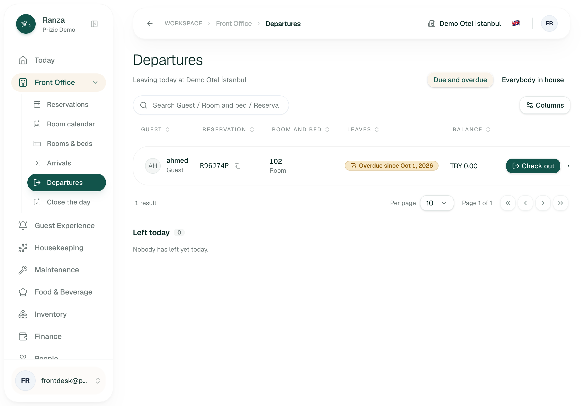
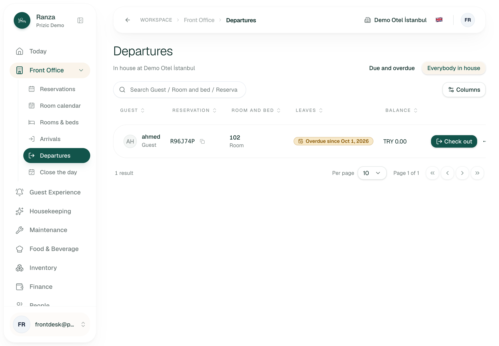
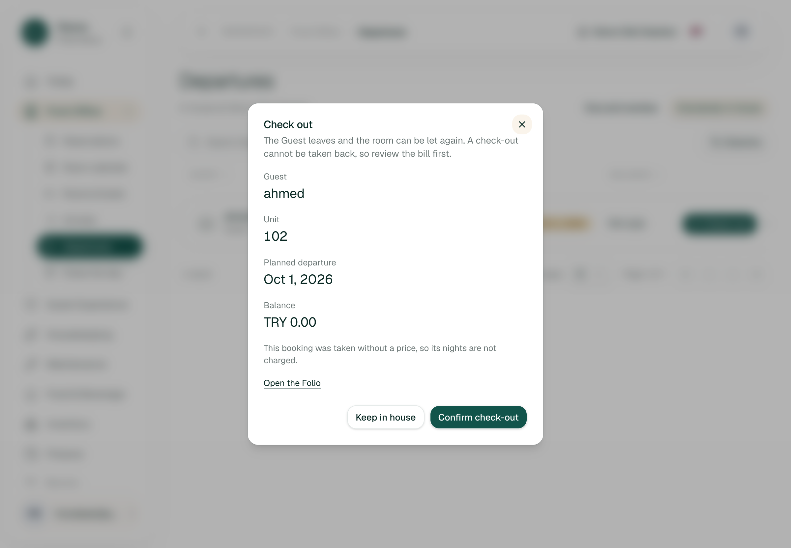
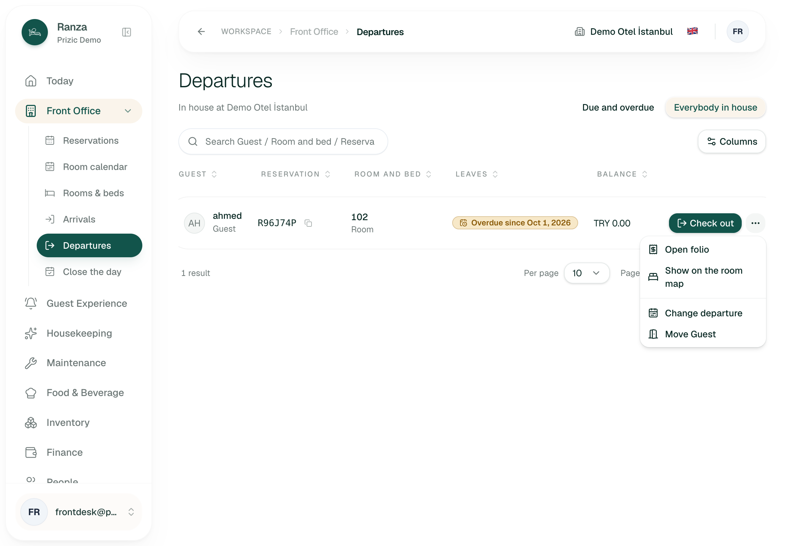
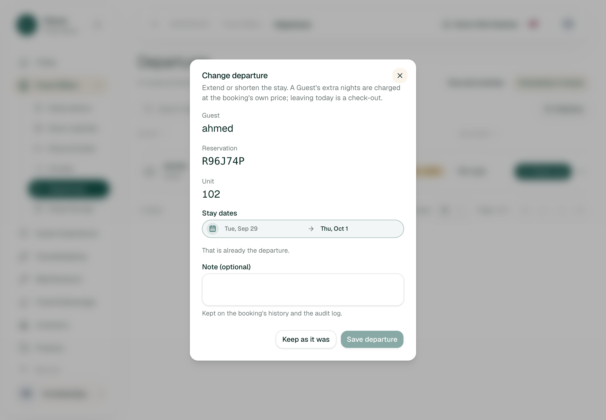
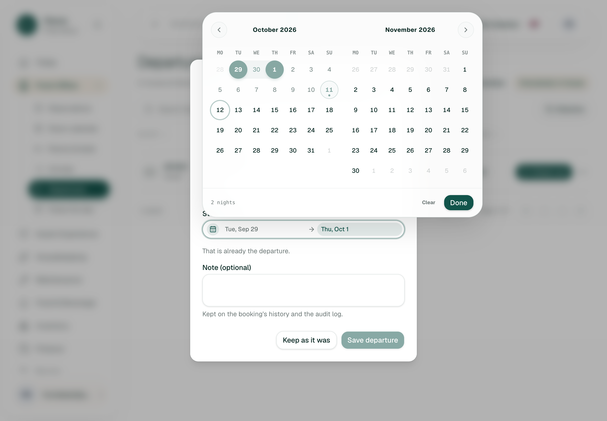


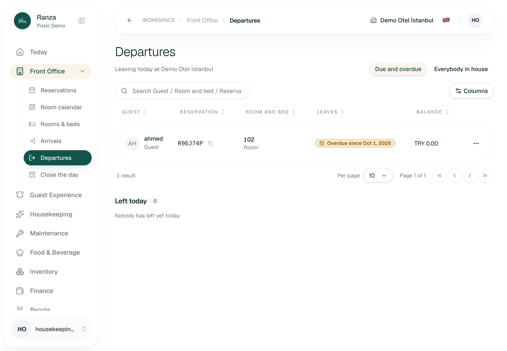
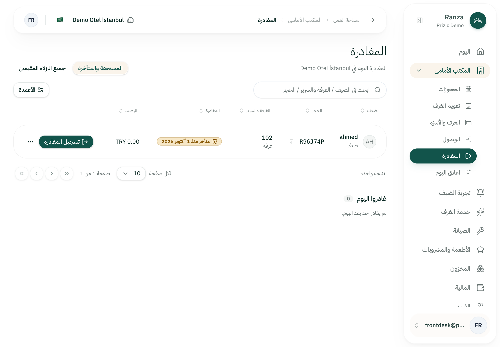
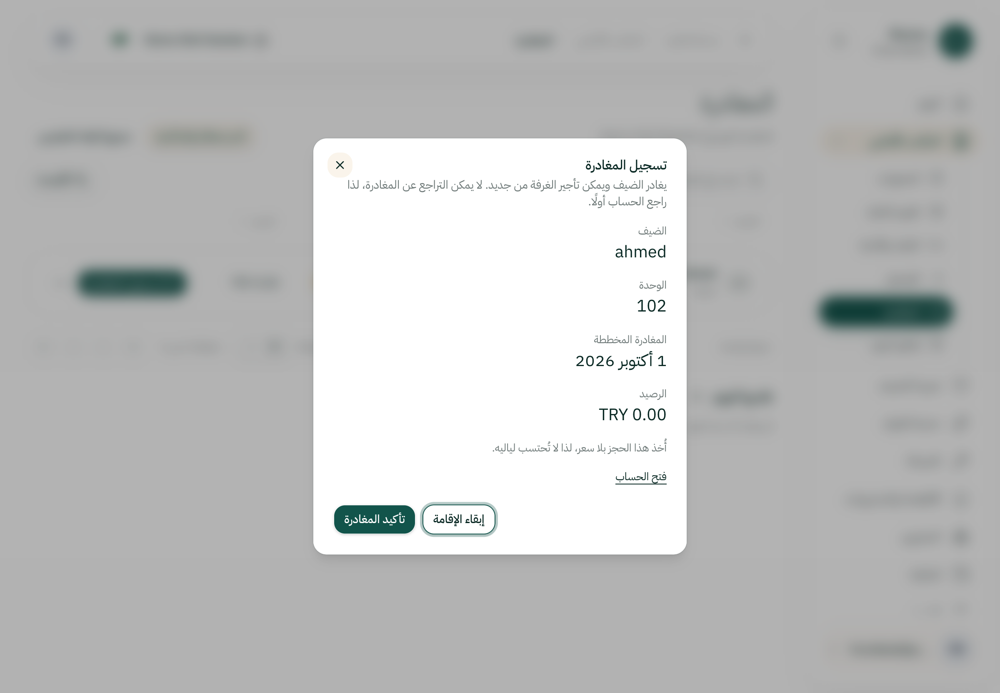
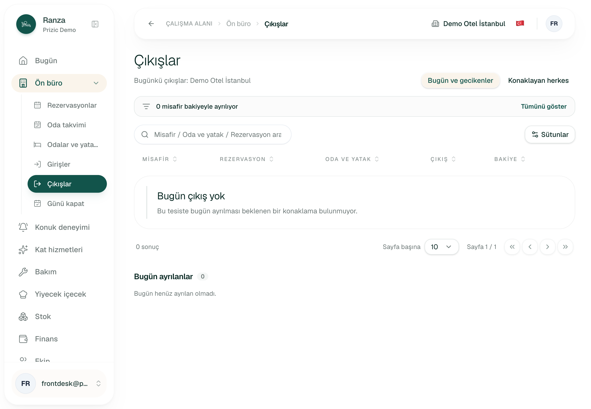
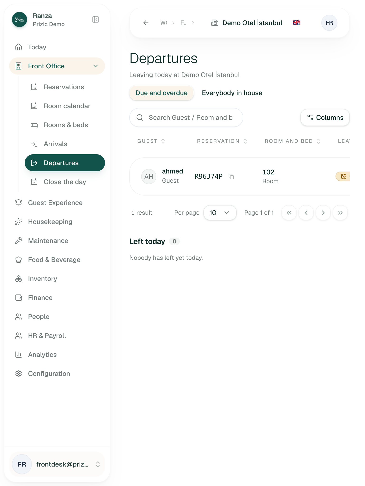
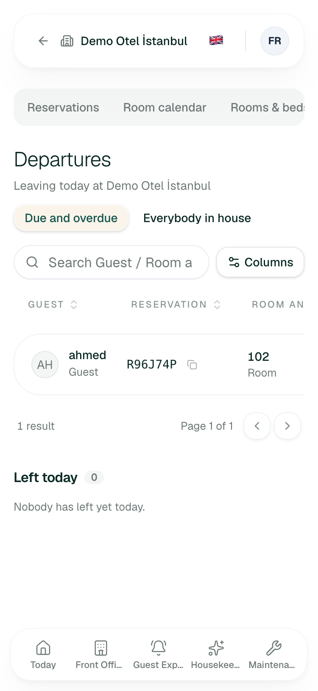

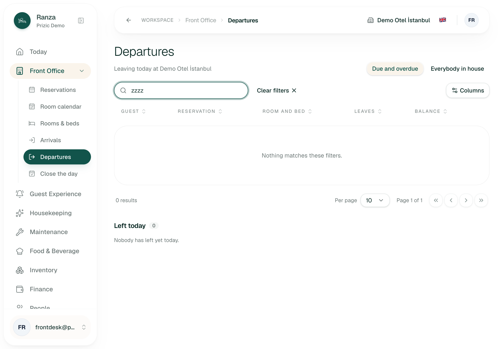